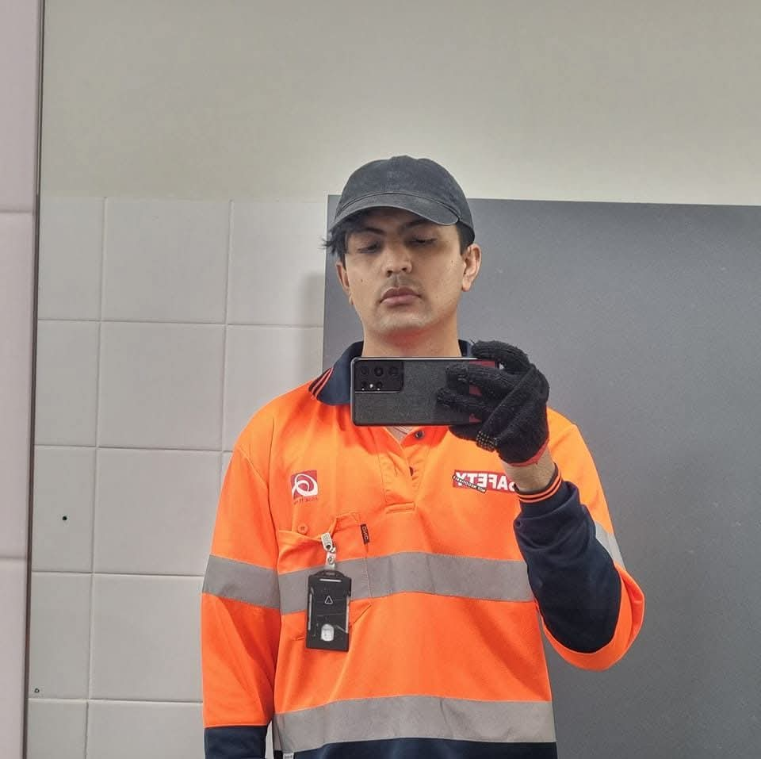

Actively seeking IT Support / QA / SOC roles
IT Support, QA & Security-minded
with real hands-on grit.
I’m an Australian-trained IT graduate with deep practical skills in troubleshooting,
testing and security fundamentals — backed by years of high-pressure work in
kitchens, farms and commercial sites. I solve problems fast, document clearly,
and learn even faster.
Bachelor of IT (Web & Mobile)
Adv. Diploma Network Security
Diploma of IT
Google IT Support (in progress)
PTE 76 → targeting 79+

“One in 7 billion” mindset
From rebuilding PCs as a kid to handling $20k+ dinner rushes and outdoor labour —
I bring calm, precision and resilience into every IT problem I touch.
Available now · NSW / AU
Sydney · Open to relocate
About Me
I’m a Nepal-born, Australia-trained IT graduate who mixes
real world hustle (kitchens, farms, cleaning, malls) with
technical curiosity (network security, QA, helpdesk support).
I’ve formatted PCs since I was a kid, replaced RAM and hard drives by age 12,
and now I’m turning that lifelong comfort around technology into a professional career.
Core Skill Areas
My focus is on three pillars: IT Support to keep people productive,
QA Testing to keep products reliable, and
Security Fundamentals to keep systems safe.
🖥️
IT Support & Helpdesk
Fixing issues calmly under pressure — from Windows problems to WiFi,
printers and software installs.
Windows troubleshooting
OS formatting
Hardware swap (RAM/HDD)
Network basics
User support
🧪
QA Testing (Manual + Automation)
Designing test cases, logging bugs and using tools to make sure
applications behave exactly as expected.
Test cases & plans
Bug reports
UI/UX & regression
Selenium basics
Postman basics
🛡️
Cyber & SOC Foundations
Network security training and log-reading mindset for beginner SOC
and security support roles.
Network security
Logs & events
SIEM fundamentals
Firewalls basics
Threat awareness
Portfolio Highlights
A snapshot of my practical work — from structured test cases and bug reports
to troubleshooting logs, WordPress testing and AI-powered workflows.
Full files are available in my GitHub portfolio.
QA • TEST DESIGN
Login Test Suite (Web App)
A structured set of test cases for validating login flows — covering
valid logins, invalid credentials, blank fields and edge cases.
Format: Excel • Focus: Functional & Negative Testing
TestCases_Login.xlsx
Manual QA
Edge cases
QA • DEFECT MANAGEMENT
Bug Reports (Jira-Style)
Clear, reproducible bug reports describing environment, steps,
expected vs actual behaviour, severity and priority.
Format: DOCX • Focus: Communication & Detail
BugReports.docx
High severity
Contact form & login
IT SUPPORT • TROUBLESHOOTING
Troubleshooting Logbook
Helpdesk-style logs capturing how I diagnose and resolve issues like
WiFi failures, slow systems and printer problems.
Format: DOCX • Focus: Problem-Solving Process
TroubleshootingLogs.docx
DNS issues
Performance tuning
WEB • WORDPRESS TESTING
WordPress Site QA & Hardening
Functional checks (navigation, forms), UI/UX review, plugin update
testing, basic security and performance checks on a WordPress site.
Format: Markdown • Focus: Functional, UI & Security
WordPress-Testing-Notes.md
Responsive checks
GTMetrix & PageSpeed
AI • MODERN WORKFLOWS
AI-Assisted Testing & Logs
Using AI tools like ChatGPT to expand test cases, analyse logs and
draft automation ideas — boosting coverage and speed.
Format: Markdown • Focus: AI + QA + Security synergy
AI-Testing-Workflow.md
Log analysis
Automation ideas
Real-World Experience
My career started far from a quiet office — in hot kitchens, farms and busy malls.
That’s where I learned to handle pressure, keep standards high, and work
with all kinds of people. Now I bring that same discipline into IT.
Kitchen Supervisor • My Fitness Kitchen
Marrickville, NSW • 2018–2022
Led kitchen teams, delegated tasks, kept operations smooth and handled
last-minute problems — very similar to managing ticket queues and
production incidents in IT.
Line Cook / Assistant Chef • Holiday Inn Sydney Airport
Mascot, NSW • 2022–2024
Ran high-volume service doing up to $15k–$20k nights. Required fast
decisions, careful timing, and consistent quality under heavy pressure —
mindset that fits perfectly with incident response and tight QA cycles.
Commercial & Mall Cleaner • Various Sites
NSW • 2019–Present
Looked after strata, malls and retail sites. Followed checklists,
reported issues and maintained standards — similar to following
runbooks, SOPs and test plans in IT support and QA.